戦いは続く・・・ [梅吉]
ラグビーW杯2019日本大会、閉幕しましたね。
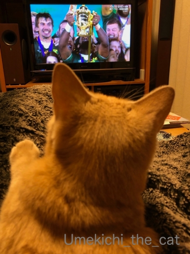
ウェブ・エリスカップ授与式の様子を眺める梅吉さん＾＾
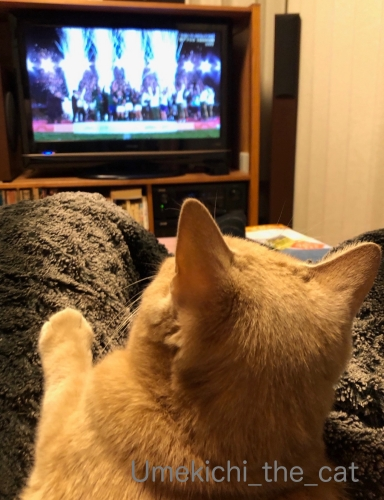
花火に仰け反り気味！？
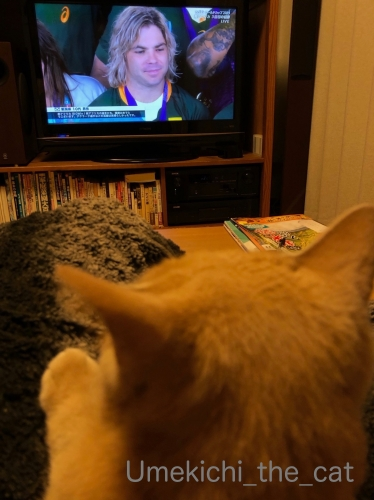
日本チームもベスト８に進んで話題も盛りだくさん
そして台風で中止になってしまった試合もありましたが
大会が大成功に終わって本当に嬉しいです。
ずーっとモヤモヤしていたデクラーク選手が誰かに似ている感・・・・・
ツイッターで発見して爆笑しました(*>艸<)
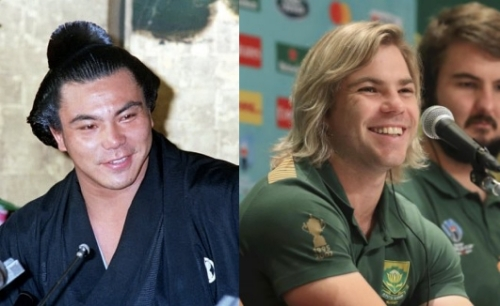
故：千代の富士関と似てますよねwwwww
デクラーク選手は決勝二日前東京ディズニーランドにいらっしゃったようで
一緒に記念写真を撮った方々のSNSも見かけましたよ＾＾
何かと話題を振りまいてくれた彼、こんな動画まで0(≧▽≦)0
（Twitterやってらっしゃらない方はご覧になれないかも！ごめんなさい＞＜）
さてさて、W杯も終わって![[猫]](https://blog.ss-blog.jp/_images_e/101.gif) わしが しゅやくやで！と張り切っているこのお方。
わしが しゅやくやで！と張り切っているこのお方。
今後は我が家のソファの上で熱い戦いが繰り広げられる模様です。
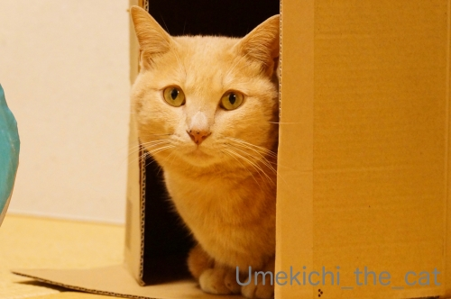
久しぶりの小さいながらも楽しい我が家を得て
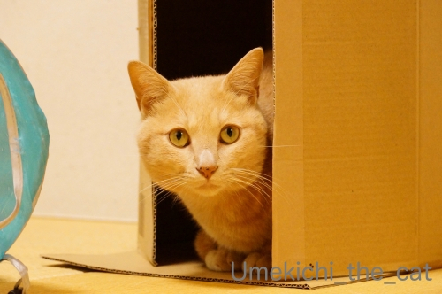
きりりとキメ顔の梅吉さんでした＾＾
昨日は正倉院展に行ってきました。
今日もこれからお出かけの予定です。
皆様のところへのご訪問は夜になりそうですm(_ _)m
 ↑ガブッと一押し↑
↑ガブッと一押し↑
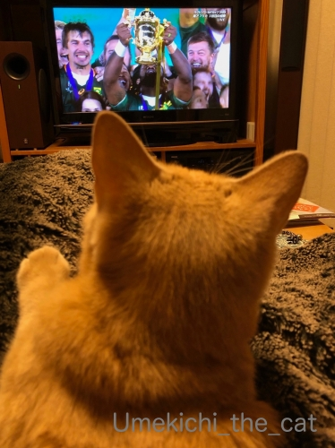
ウェブ・エリスカップ授与式の様子を眺める梅吉さん＾＾
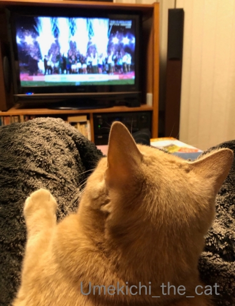
花火に仰け反り気味！？
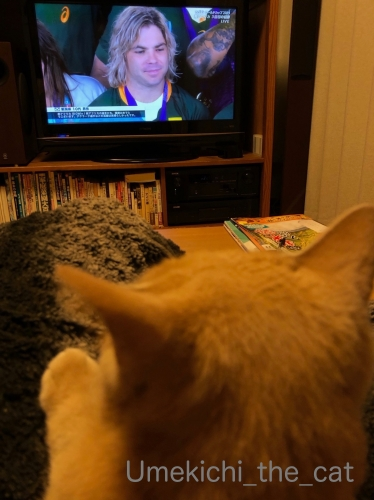
日本チームもベスト８に進んで話題も盛りだくさん
そして台風で中止になってしまった試合もありましたが
大会が大成功に終わって本当に嬉しいです。
ずーっとモヤモヤしていたデクラーク選手が誰かに似ている感・・・・・
ツイッターで発見して爆笑しました(*>艸<)
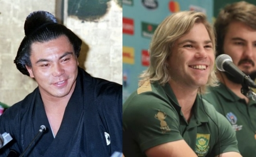
故：千代の富士関と似てますよねwwwww
デクラーク選手は決勝二日前東京ディズニーランドにいらっしゃったようで
一緒に記念写真を撮った方々のSNSも見かけましたよ＾＾
何かと話題を振りまいてくれた彼、こんな動画まで0(≧▽≦)0
（Twitterやってらっしゃらない方はご覧になれないかも！ごめんなさい＞＜）
さてさて、W杯も終わって
今後は我が家のソファの上で熱い戦いが繰り広げられる模様です。
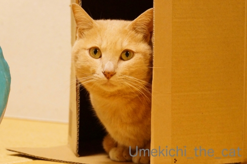
久しぶりの小さいながらも楽しい我が家を得て
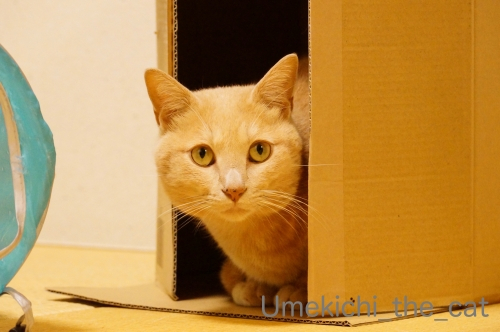
きりりとキメ顔の梅吉さんでした＾＾
昨日は正倉院展に行ってきました。
今日もこれからお出かけの予定です。
皆様のところへのご訪問は夜になりそうですm(_ _)m

カフェオレ色の梅吉

梅吉 2023年8月10日 永眠


梅吉と出会った譲渡会

犬猫の理由なき殺処分ゼロ
妄想広告
UMEKICHI 光

爆発的に早い！
時々攻撃的！
Thanks to Mr.Boss365
爆発的に早い！
時々攻撃的！
Thanks to Mr.Boss365

ラグビーワールドカップが終わって週末が寂しくなります。
梅吉さんソファーでバトルしていますね(^^)
by ma2ma2 (2019-11-04 09:13)
デクラーク選手と千代の富士とは！
こうやって見るとたしかに似てる～www
よく気付かれましたね～(^^)
by あおたけ (2019-11-04 11:24)
こんにちは。
梅吉君の頭部、ラグビーW杯が終了して何気に寂しそうです（笑）
花火演出、のけぞってますね！！
大会が大成功は嬉しいですね。ブレイブ・ブロッサムズの活躍！！様様です
デクラーク選手、千代の富士関に似てますね。セクシーなファフィー？ナイスです（笑）
梅吉君、活性が良いですね。次回は足にタックルも期待しています。
お天気良いのでお出かけ日和！！梅吉君はお昼寝日和ですね！？(=^･ｪ･^=)
by Boss365 (2019-11-04 12:40)
ラグビーＷ杯が終了・・・
梅吉さんの膝の上を満喫も終了？？
ソファの上での熱い戦い！
梅吉さんの張り切り度が可愛過ぎます(#^.^#)
by きぃ (2019-11-04 14:38)
南アフリカのあの人、確かに似てますねえ〜。驚き。^o^
by carotte (2019-11-04 15:27)
梅吉くんがいつもお膝に乗ってTVを見ているのがすごいな～って思っていたら！
ちぃさんのお家はTVの前がフラットで登れないようになっているんだね！！
家はTVに注目しているとTV台の上に乗ってきて居座られたり
モニターをぺろぺろされたり全然集中できないのｗ
熱い戦いは記憶として残るから、梅吉くんはW杯が終わっても
まだまだ戦い続けるにゃ。
素敵なカバーリングがくしゃくしゃ～(≧▽≦)
by emi (2019-11-04 15:40)
千代の富士！ なるほど！！
体が小さいのに身体能力ばつぐんなところも似てますね。
梅吉さんの後ろ頭に萌えます。
いいなあ、猫のいる暮らし…。（寒くなったからではありませんよ！）
by liang (2019-11-04 17:05)
千代の富士に！似てるーー(爆)
W杯終わって、ラグビーロスになってませんか～？
ニュースでパレードとかやってるの見て、よく知ってる場所だなーなんて見てましたが、全然近寄りもしなかった(^^;)
昨日はちょっと外れたところのコーヒー屋(豆屋)さんに行ってきたのですが、前日のパレードのあった日はそっちに人が流れて閑散としてたとか。
梅吉さんは、ラグビー終わって自分が活発になってるのね。楽しそう。
by ChatBleu (2019-11-04 17:06)
W杯、大成功に終わって本当に良かった(#^^#)
台風で中止になった時はどうなることかと思いましたが・・。
デクラークと千代の富士、確かににか～っと笑ったお顔がそっくり！
イギリスのヘンリー王子が南アの控え室？を訪問した映像を見ましたが、なぜかデクラーク選手はパンツ一丁^^;
ほっんとにムキムキでした！！
ラグビーロスのおかーさんを、梅吉さんが目いっぱい盛り上げてくれていますね^^
by ゆきち (2019-11-04 17:49)
なるほど！ウルフ千代の富士～！！
野球の日本シリーズも、ワールドカップも終わって、
しばらくは平穏な日々がやってくるのでしょうか～。
by よーちゃん (2019-11-04 18:15)
デクラークが千代の富士似ｗ そうかｗもやもやが晴れてよかった。
小さい体で縦横無尽に駆け回りその存在感を不動のものにしましたよね。
しつこい小さな巨人 これが彼の印象。
動画は躍動感あふれる梅吉さんのひとりラグビーがｗ
今夜も熱い闘いが繰り広げられているのかな？
正倉院展行かれたのですね♪ いいなぁｗ
首里城の火災をうけて、機会があるときに見たいと思うものは見ておくべし
痛感した次第です。
by marimo (2019-11-04 18:26)
TVを眺める梅吉さんの後頭部と手、いいですね♪ 癒されます。^^)
梅吉さんの機敏な動きに感動しました。^^;
by yes_hama (2019-11-04 21:52)
ぁぁっ、確かに千代の富士に似てるね（ﾟ□ﾟ）
息子だったりして？
by 英ちゃん (2019-11-04 22:21)
似てる似てる! 笑っちゃいますね~。
梅吉さんのラグビー熱は冷めないようで元気で何よりです。
by zombiekong (2019-11-05 00:32)
奇遇ですね、僕も3日に正倉院展に行ってきました
もしかしたらすれ違ったりしていたかもです！
梅吉君、W杯が終わって寂しいかな？
後ろ姿が可愛い～
by 藤並 香衣 (2019-11-05 01:00)
筋肉質なところも似てるかも＾＾
by ぽちの輔 (2019-11-05 06:22)
梅吉さん、ラクビーのジャッカルみたい！
確かにそっくりですね^^
by ニコニコファイト (2019-11-05 06:37)
梅吉くん、あつい戦いをしたのですねー！
ソファーカバーって、なんか興奮するみたいよね(笑)
昨日はどこに出掛けたのかな？
こちらは、今日は予定無しなので家でのんびり。
明日はまたトーハクに行ってくるつもりです〜〜。
正倉院展の後期展示。さすがに混雑は覚悟して
展示替えしたものだけ見てこようと思ってます^^
by リュカ (2019-11-05 11:00)
その昔、ラグビー仲間たちと千代の富士がラガーマンだったらなぁ〜って、真剣に語り合ってた事を思いだしました。今回はにわかファンでも注目されてなりよりでした。
ね！元マネージャーさん！^ ^
by 小松達也 (2019-11-05 20:03)
梅吉さん、お母さんのひざ掛けの上で観戦ですねぇ＾＾
ソファでの熱い戦い、さすが運動神経抜群の梅吉さんだなぁ( ^ω^ )
うちの大御所だとこんな風には動けませんw
同じダンボールなのに、梅吉さんが使うと素敵な我が家で
うちのアルが使うとただのヘタレたベッドなのはなぜなんだろうw
by ニッキー (2019-11-05 20:28)
梅吉さんの後ろ姿、
真剣に見ているように想像できます。
ソファの戦い、白い布間が雰囲気を出してますね。
by kiki (2019-11-05 23:01)
花火ドーンにイカ耳ぴくぴく！？
金髪ロン毛野郎に勝るとも劣らない、
鋭い梅吉さんの身のこなしはまさにワールドクラスです(笑)
by yamatonosuke (2019-11-06 00:58)
デクラーク選手と千代の富士！！！
似てますーーー(*￣ｍ￣)ノ彡＿☆
どこかで見たような？と思っていたけどスッキリしましたｗ
ラグビー盛り上がりましたね♪
にわかで恥ずかしいけど、私もTV観戦しましたもの。
日本に勝った南アが優勝してうれしいです(*´∇｀*)
「おかーさん、ラグビーはボクに任せてや！」と
言っているような梅ちゃんですね(≧ω≦)
ロスにならなくてすみそうですねｗｗ
by カトリーヌ (2019-11-06 13:16)